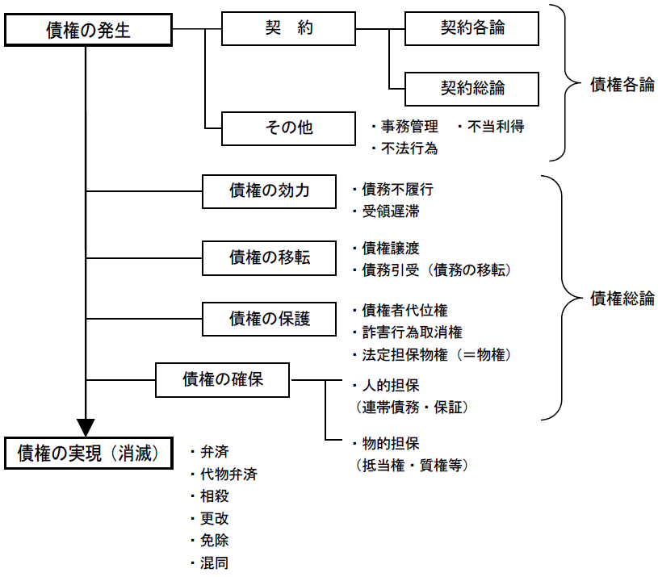

第４編 債権総論
第１章 総説
第１節 債権の意義
債権とは、特定の人（債権者）が、特定の人（債務者）に対して、特定の行為をすること（又はしないこと）を請求できる権利をいう。
また、これに対応する相手方の義務を債務という。

第２節 債権の目的
Ⅰ 総説
債権の目的：債務者の行為すなわち給付
1. 適法性－給付が公序良俗（90条）・強行法規（91条）に反しないこと
2. 可能性－債権が成立した時に給付が可能であること
3. 確定性－給付内容が履行時までに確定されること
4. 社会的妥当性－給付の内容が社会的にみて妥当であること
1. 作為債務・不作為債務
作為債務：債務者がある行為を積極的に行うことを内容とする債務
不作為債務：債務者が積極的な行為を行わないことを内容とする債務
2. 与える債務・なす債務
与える債務：財貨の取得が債権の目的である場合
なす債務：債務者の行為そのものに意味のある場合
物の引渡しは債務者の行為にほかならないが、その他の行為とは異なり、必ずしも債務者の積極的行為を要しないので、「与える債務」として、それ以外の債務者の行為を目的とする「なす債務」から区別される。
区別の実益は、強制履行の方法の相違にある。
3. 結果債務・手段債務
結果債務：特定の結果の実現が債務の目的となっている場合
手段債務：結果に向けて最善を尽くすことが債務の内容になっている場合
Ⅱ 特定物債権と種類債権
1. 意義
：特定物の引渡しを目的とする債権
2. 特質
(1) 善管注意義務
債権の目的が特定物の引渡しであるときは、債務者は、その引渡しをするまで、契約その他の債権の発生原因及び取引上の社会通念に照らして定まる善良な管理者の注意をもって、その物を保存しなければならない（400条）。
行為者の具体的な注意能力に関係なく、取引上、当該場合に行為者の職業、その属する社会的・経済的地位などにおいて一般に要求される程度の注意義務が要求される。
(2) 引渡義務
債権の目的が特定物の引渡しである場合において、契約その他の債権の発生原因及び取引上の社会通念に照らしてその引渡しをすべき時の品質を定めることができないときは、弁済をする者は、その引渡しをすべき時の現状でその物を引き渡さなければならない（483条）。
特定物の引渡しについて、弁済者に、当事者間の合意によって定められた品質の物を引き渡す義務が生じることを規定している。
1. 意義
：給付すべき物の個性に着目せず、種類と数量のみに着目する債権
2. 特定以前の特質
(1) 調達義務
種類債権では、種類物が滅失・損傷しても、同種の物が市場に存する限り、債務者はこれを調達して給付しなければならない。
(2) 種類債務は同種の物が市場に存する限り履行不能とならないから、危険負担の問題は生じない。
3. 種類債権の特定（401条２項）
：種類債権の目的物が特定のものに確定すること
種類債権は、同じ種類の物が市場に存する限り、履行不能とならない。しかし、このことは、債務者に非常に重い責任を負わせることになる。
そこで、一定の行為があった時を基準として、それ以後は選定された物だけが債権の目的物となるとした。
(1) 特定を生ずる時期
① 債務者が物の給付をするのに必要な行為を完了したとき（401条２項前段）
「物の給付をするのに必要な行為を完了し」たとき（①）とは
→ 債務者が債務の態様に応じ、するべきことをすべて終えて、債権者が履行の場所で受け取ろうと思えば受け取れる状態に置いたときである。債務の態様により異なる。
(a) 持参債務
：債務者が目的物を債権者の住所又は指定された場所で引き渡すべき債務
債権者の住所において現実の提供（債権者が協力（受領）すれば弁済が完了する程度の準備をすること、493条本文）をしたときである。
(b) 取立債務
：目的物の所在地に債権者が出向いていって、目的物の引渡しを受ける債務
引渡しの準備をし、目的物を他から分離した上で債権者に通知したときである。
ただし、分離は、特定のための重要な考慮要素ではあるが、特定の必須の要件ではない。
(c) 送付債務
：債権者・債務者の住所地以外の第三地に目的物を送付すべき債務
ⅰ 第三地での履行が義務の場合は持参債務と同じである。
ⅱ 債務者の好意による場合は発送のときである。
Ｑ 瑕疵ある物の給付でも特定するか。
→ 特定しない（通説）。
（理由）
瑕疵物の給付は、債務の本旨に従った履行とはいえず、債務者がするべきことをしたとはいえない。
② 「債権者の同意を得てその給付すべき物を指定したとき」（401条２項後段）
③ 当事者間の合意
(2) 特定の効果
特定以後はその物が目的物となり（401条２項）、以下のような効果が生じる。
①善管注意義務の発生
②特約のない限り所有権が移転
4. 制限種類債権
：種類物につき、さらに一定の範囲の制限を加えた物の給付を目的とする債権
ex．この倉庫の中にある米のうち10俵
(1) 履行不能
種類債権では、世の中からその種類の物が全部なくならない限り履行不能ということはないが、制限種類債権にあっては、その限定された範囲内の物が全部滅失すれば履行不能となる。
(2) 品質
種類債権においては給付される物の品質が問題となるのに対し、制限種類債権では限定の範囲内の物であれば通常品質は問題とならない。
Ⅲ 金銭債権
：一定額の金銭の支払を目的とする債権
金銭債権は、種類債権の極限とでもいうべきものであり、目的物の特定（401条２項）も観念できないし、履行不能は生じない。
不可抗力による不履行でも免責されない（419条３項）。
Ⅳ 利息債権
1. 定義
利息債権：元本の収益の対価としての利息の支払を目的とする債権
利息：元本となる金銭、その他の消費物の使用の対価としてその額と使用期間に応じて、一定の利率により支払われる金銭その他の代替物
2. 利息の発生原因
約定利息：法律行為（契約）により発生する
法定利息：法律の規定により発生する
1. 利率
約定利息では当事者の約定による（利息制限法による制限あり）。
定めのないとき、及び法定利息の場合は法定利率による（404条）。法定利率は年３％で（404条２項）、３年を１期として法定利率を見直し（404条３項）、各期の法定利率を短期貸付けの平均利率の過去５年平均に連動して１％単位で変動する（404条４項・404条５項）。
そして、このように法定利率につき変動制を採用したことに伴い、ある債権に適用される法定利率は、最初の利息発生時に固定される（404条１項）。
2. 重利（複利）
：弁済期に達した利息が元本に組み入れられて、これを元本の一部として更に利息が発生すること
(1) 法定重利
①利息の支払を１年以上延滞し、②債権者が催告をしても債務者が支払わない場合、債権者は延滞利息を元本に組み入れることができる（405条）。
(2) 約定重利
当事者間で重利を約することもできる。
1. 制限利率（利息制限法１条）
暴利行為を防止するため、利率の上限を定める。
①元本の額が10万円未満－年２割
②元本の額が10万円以上100万円未満－年１割８分
③元本の額が100万円以上－年１割５分
2. 制限違反の効果
制限利率を超える利息･損害金の約定は無効（同法１条、同法４条１項）。
Ⅴ 選択債権
：数個の給付のうちから選択されたいずれかの給付を目的とする債権
1. 当事者の契約
2. 法律の規定
ex．無権代理人の責任（117条１項）、占有者の費用償還請求権（196条２項）、賃借人の費用償還請求権（608条２項）
選択債権の目的は選択的に定まっているにすぎないから選択によって一つの給付に特定するまでは、債権を実行することも強制履行することもできない。そこで、民法は選択の方法と特定について詳細な規定を設けている。
1. 選択による特定
(1) 選択権者
(a) 原則として債務者（406条）であるが、特約で債権者・第三者にすることも可能である。
(b) 弁済期において、相手方から相当の期間を定めた催告があっても選択しないときは、選択権が相手方に移転する（408条）。
(c) 第三者が選択権を有する場合に、その第三者が選択をすることができず、又は選択をする意思を有しないときは、選択権は債務者に移転する（409条２項）。
(2) 選択の方法
(a) 当事者がするときは、相手方に対する意思表示による（407条１項）。
(b) 第三者がするときは、債権者又は債務者に対する意思表示による（409条１項）。
(3) 選択の効果
選択があった場合、普通の債権に転化する。
(a) 特定の遡及効
選択の効力は、債権発生の時にさかのぼる（411条本文）。ただし、第三者の権利を害することはできない（411条ただし書）。
しかし、第三者との関係は対抗要件で決せられるため、ただし書は意味がない。
(b) 撤回不可
選択すると相手方（当事者の選択の場合）又は債権者･債務者（第三者の選択の場合）の承諾を得なければ、撤回することができない（407条２項）。
2. 不能による特定（410条）
(1) 選択権を有する当事者の過失により給付不能なとき
残部に特定する。
(2) その他
選択権を有しない当事者の過失によるときや、いずれの当事者の過失にもよらないで給付が不能となったときにも、残存する債権に特定しない。
(3) 特定しない場合の取扱い
不能の給付が選択された場合、債権者はその債務の履行を請求することはできない（412条の２第１項）が、債務不履行による損害賠償の請求は可能である（412条の２第２項、415条）。
第３節 債権の効力
Ⅰ 総説
債権者は債務者に対し、特定の行為すなわち給付を行うべきことを請求する権利を有し、債務者はこれに対し給付すべき義務を負う。
1. 債権の債権者・債務者間における効力を、対内的効力という。
債権の対内的効力には、①請求力（債権者が債務者に給付を請求する効力）、②給付保持力（給付された利益を保持する効力）、③訴求力（債務者が任意に債務の本旨に従った給付をしない場合に裁判所に訴求する効力）、④執行力（債権の強制的実現を図る効力）がある。
2. 自然債務（債務者が任意に給付しない場合にも債権者が訴求することができない債務）
債務が存在する以上、自然債務の弁済は非債弁済（705条）とならない。
ex．不起訴の特約ある債務、消滅時効を援用した債務（508条）、不法原因給付（708条本文）
1. 第三者による債権侵害
第三者が債権を侵害した場合に、第三者に対しても債権を根拠に損害賠償請求や妨害排除請求をし得る。
2. 債権の物権的効力
Ｑ 債権が第三者によって侵害された場合に、不法行為として損害の賠償を請求することができるだけでなく、その侵害の排除を請求することができるか、債権にも物権についての物権的請求権に対応するものを認めるかどうかが、主として不動産賃借権について問題となる。
→ 対抗力ある不動産賃借権に限って認められる（605条の4）。
なお、この立場によっても、対抗力のない賃借権の場合は債権者代位権の転用により保護できる。
Ⅱ 現実的履行の強制
：国家機関により、債権の内容を強制的に実現させる手続
1. 直接強制
：国家の執行機関の力により、債務者の意思にかかわりなく直接に債権内容を実現する方法
ex．金銭債権について債務者の財産を競売で処分して一定の金額を調達し、債権者に与える場合
2. 代替執行
：債権者が裁判所に請求し、その裁判に基づいて、第三者（債権者でもよい）の手により、債務者に代わって債権の内容を実現させ、その費用は債務者から強制的に徴収する方法
ex．家屋を取り除く債務において、債権者が労務者を雇ってこれをして、その費用を請求する場合
3. 間接強制
：債務の履行を確保するために相当と認める一定額の金銭の支払を命じることにより、債務者を心理的に圧迫して債権内容を実現させる方法
ex．電力会社の配電設備工事をすべき債務について、「１週間以内で完成せよ、遅延するときは１日に１万円ずつの損害賠償を支払え」と命じるような場合
債権に内在する実体的権能として、直接強制に限らず、債権者が国家の助力を得て強制的にその債権の内容を実現することができる。また、強制執行の具体的方法を民事執行法に委ねた。
なお、債務の性質がこれを許さない場合は間接強制は認められない（414条１項ただし書）。
ex．芸術的創作、夫婦の同居義務